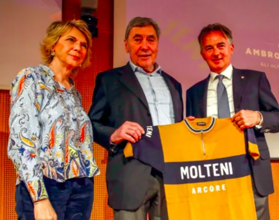
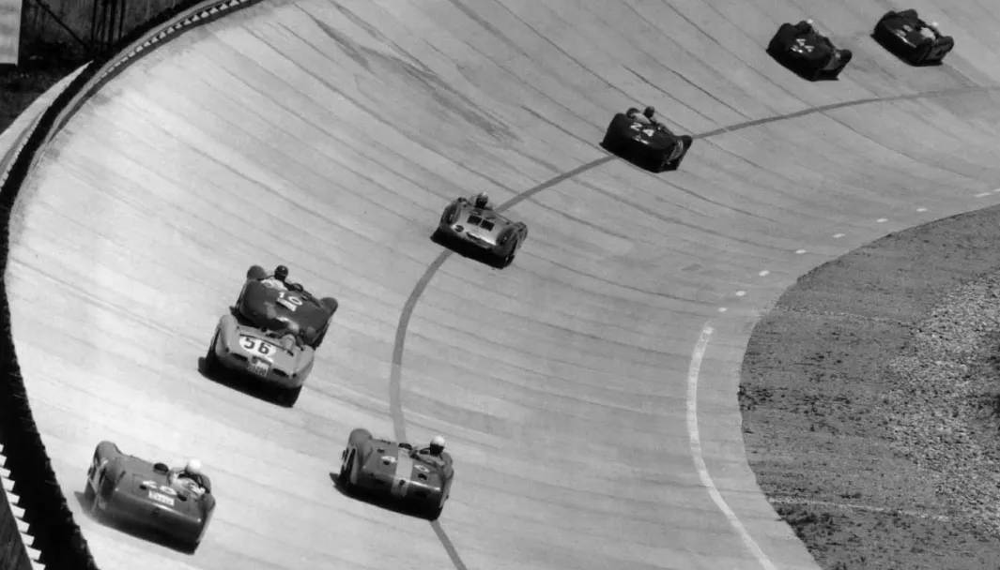

IL LOMBARDIA 1973, Squadra Molteni Revenge Tour

Giro Lombardia, 1973 sæsonens sidste løb, var allerede afgjort 60 kilometer fra mål: Merckx angreb, fortsatte alene og nåede målstregen på Velodromen i Como med 4’15” til den første forfølger, Gimondi. Det blev Eddy Merckx’s 52. sejr det år.

Det officielle resultat ændrede sig dog næsten en måned senere: Den 8. november 1973 annoncerede Unione Ciclismo Italiano Professionistico i en pressemeddelelse, at Eddy Merckx var testet positiv for Mucantyl, i den antidopingtest.
Merckx erkendte indtagelsen af norephedrin, der var et håndkøbslægemiddel ordineret til ham af Molteni-lægen, Angelo Cavalli, blot med det formål at behandle en mild form for bronkitis.
Men det Unione Ciclismo Italiano Professionistico ville ikke give sig, for de havde nemlig i samme pressemeddelelse udråbt Felice Gimondi som vinder. Gimondi, der samme år havde skiftet fra Salvarani til Bianchi – der tilfældigvis havde hovedkvarter i Lombardiet…
Merckx og Molteni skal have genrejsning. Derfor rejser Squadra Molteni til Lombardiet i aften. Der er et regnskab der skal gøres op. Et 7-mandshold fra Squadra Molteni rejser til Lombardiet for at køre “IL LOMBARDIA 1973, Squadra Molteni Revenge Tour”, der bl.a indeholder de berygtede stigninger Madonna del Ghisallo og Muro di Sormano. Stigninger som de fleste carbonprofessionelle i dag ville gå i strejke over at skulle køre i gearing 42-28 – som er det absolut letteste gear en Squadra Molteni racercykel kan komme ned i.
Audiens hos Molteni-familien
Udover at køre store dele af Il Lombardia, vil holdet også komme i audiens hos Molteni-familiens overhoved Mario Molteni, som bl.a. byder holdet velkommen på Molteni-fabrikken i Arcore (der nu hedder Salmilano), der var hovedsponsor for historiens mest vindende cykelhold fra 1959 – 1976: Molteni Arcore.


Holdet er også blevet inviteret til den legendariske motorbane i Monza. Her skal Squadra forsøge at slå hastighedsrekorden for 7-mands retrohold. Dette skal selvfølgelig skal på den gamle ovale motorbane Sopraelevata.


Stay tuned for opdateringer – og fantastiske billeder
FORZA MOLTENI